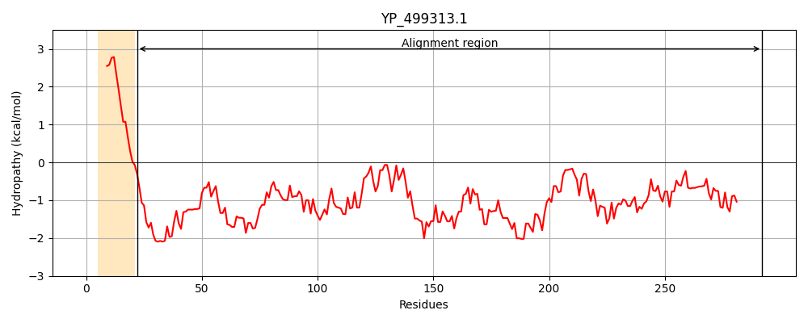
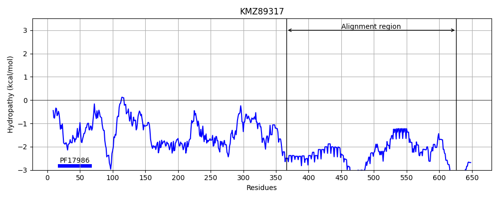
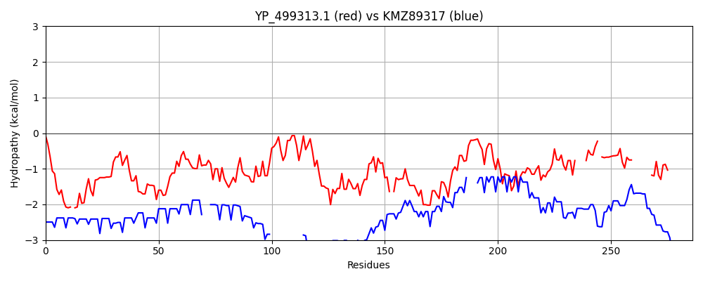

Hit Accession: KMZ89317
Hit TCID: 9.B.367.1.2
Hit Description: gnl|BL_ORD_ID|6006 gnl|TC-DB|KMZ89317.1|9.B.367.1.2 knob-associated His-rich protein [Plasmodium vivax Brazil I]
Mach Len: 286
e:0.000019
Query TMS Count : 1
Hit TMS Count: 0
TMS-Overlap Score: 0.000000
Predicted Substrates:None
BLAST Alignment:
Score: 106 , Bit scores: 45 bits, E-value: 1.9e-05, Alignment length: 286, Percentage identity: 23
Query: 22 NKEKEAQHQFTK-QFKDVEQKQKELQHVMDNIHLKEIDHLSKTDTTDKNSKEFKALQEDVKNHLIPKFEAYYKSAKNLPDDTMKVKKLKKEYMTLANEKKDAIYQLKKFIGLCNQSIKYNEDILDYTKQFEKNRYKVESEIKLADNKSEATNL-TTKLEHNNKALRDTAKKNLDDSKENEVKGAIKNHIMPMIEKQITDINQTNISDKHVNNARKNAIEMYYSLQNYYNTRIETI----KVSEKL-SKVDVDKLPKKGID--------ITHGDKAFEKKLEKLEEK 292
N+E+ +Q + + Q E QKE N + ++ + + + +A QE+V + + E + + + + K++ KE + KK + K E TK+ E + E K + K + TN T E NK +T + N +++ E+K N E +IN I+ + +N N E+ N NT E I K EK K DV++ + + TH K EKK EK +EK
Sbjct: 366 NQEETSQEETNQEQVNQEEANQKEANQEETNQEEINQEETNQEQVNQEETSQEEANQEEVNQEEVNQEEV---NQEEVNQEEANQKEINKEEINKKETKK--------------KESKKKESKKKETKKKETKK----KEAKKKETKKKETNTGETNTEEINKEETNTGETNEEETNTEEIKTEEIN----TEEINTEEINTEEINTEEINTEEINTEEINDEKTNDENTNAEGIHQEKKTDEKADEKTDVEEKEEVNTNAEKTQDTITTHEKKEEEKKEEKKKEK 626 | Protein Hydropathy Plots: |
|---|
|  |  |
Pairwise Alignment-Hydropathy Plot:
|
|---|
|  |